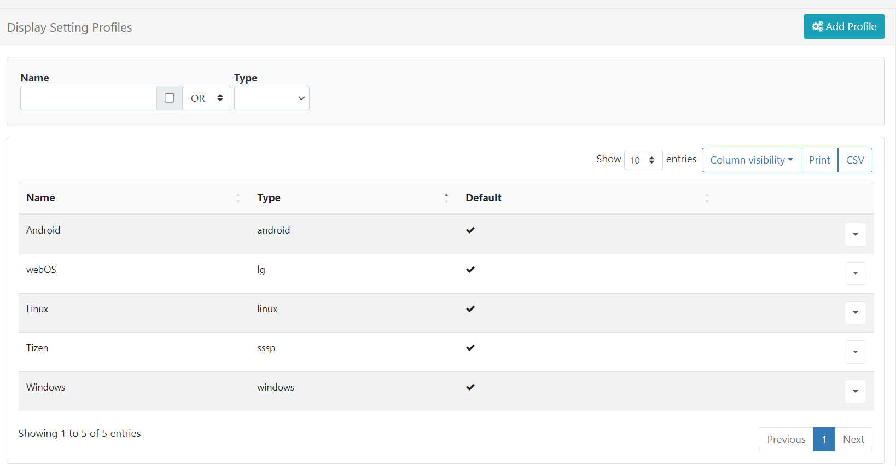

Display Settings
Once installed and Connected to the CMS, Displays can be automatically managed and configured using Display Setting Profiles. Each Display has a default profile which can be customised by an Administrator to suit requirements.
Available profiles can be viewed by clicking Display Settings under the Display section of the main CMS menu:

Each profile has a Name, Type and a flag indicating if it is the default or not. Default profiles are automatically assigned to Displays of the corresponding type.
Add/Editing Profiles
To Add a new Profile:
- Click on the Add Profile button and give the new Profile a Name and select the Display Type.
- Use the box if this should be used as the Default Profile for all Displays of the selected type.
Only 1 profile can be selected as the Default Profile per Display Type!
- Complete all the required settings for the new Profile.
To Edit an existing Profile:
- From the row menu of the selected Profile click Edit.
- Use the form to adjust the available settings.
For ease, use the row menu to Copy a Profile so you can make adjustments as needed to quickly create new Profiles!
Some of the notable settings are listed below:
Collect Interval
Located on the General tab, use the Collect interval drop-down menu to determine how often the Player checks for new content/schedules. This means that once a Player has communicated with the CMS, it will check again for any changes by the time set here.
Scenario: A Player has a collect interval set for 24 hours, it will check for any changes, action pending changes and then wait for the next 24-hour collection. If a change is made between this period of time, the Player will not be aware of it until it is time to check again.
If a Display Profile for a Player is changed, the Player will only be aware of the change after it has connected according to its prior connection interval.
Scenario:
A Player with a collect interval set for 24 hours made a check at 12 pm, it will not check again until 12 pm the following day for any changes that have been made. Once the 24 hour interval has passed, it will update the new changes and from this point will collect changes based on the new Profile.
The CMS can be configured to talk to an XMR instance if player actions are required, please contact your Administrator.
We recommend setting an interval no lower than 5 minutes for production, generally a 15-30 minute setting would be sensible.
Enable Stats Reporting
Further down the General tab, use the box to enable/disable the collection of statistics for Proof of Play Reports for all Displays that use the selected Display Profile.
-
If enabled set the required level of collection for Proof of Play statistics to be applied to all Layouts, Media and Widget items using the Aggregation level drop down:
-
Individual - statistics are collected when specified by default.
-
Hourly - statistics will be collected hourly by default.
-
Daily - statistics will be collected daily by default.
-
If the geolocation of the Display is known, enable the checkbox to record the location against each proof of play record. Users with mobile Displays can turn this setting on if desired.
Download and Update windows
Located on the Network tab, set a time window for Downloads from the CMS and Updates to the Player:
Download window timings
- Select Start and End times to connect to the CMS to download any changes that have been made.
If you make changes to content outside of the download window set, the Player will not be able to download any changes and could cause the Player to show the assigned default Layout or Splash screen instead.
Leave at the Default 00:00 - 00:00 to leave the window as always open!
Update window timings
- Select Start and End times to install any application updates.
Define a time to download updates to a Player, such as new Player versions. This will also include any new or changes to existing schedules to be updated to the Player. Changes to content will NOT be updated during the set Update window timings set.
This setting is best used in conjunction with either assigned Layouts or deferred published Layouts so that they publish during the update window!
Force HTTPS
From the Network tab use the checkbox to force a Displays connection to the CMS using HTTPS.
This option can be overridden for individual Displays if required.
Operating Hours
Set Operating Hours for Displays by setting pre-defined Dayparts
- Use the Network tab for Windows, Android and Linux Players, and select the day part to use from the drop down menu.
- Use the General tab for webOS and Tizen Players, and select the day part to use from the drop down menu.
‘Email alerts’ such as those which send when a Display is offline, will not be sent outside of the specified Operating Hours.
Expire Modified Layouts
Located on the Advanced tab, use this checkbox to tell BI Square Brand Activation to immediately expire and cut playback of a Layout when a Player receives an update from the CMS.
Useful for Layouts with long durations!
Use Multiple Decoders
Gapless Playback with Video content requires a device to have multiple decoders. This setting can be found on the Advanced tab and will automatically use the Device Default.
Should an issue arise with playback, use the dropdown to set to On!
Enable Touch capabilities on the device (Android only)
If the Display is to be used as a touch screen, enable this option from the Advanced tab.
Enabling this option will show a one time message on the Player which will need to be manually dismissed!
When left disabled, touching the screen will show the action bar according to the Action Bar Mode option.
Deleting Profiles
Delete Display Profiles by using the row menu.
Please ensure that there is one default remaining for each Type.
Settings Profile
A Default Profile will automatically apply its settings to all Displays of the same Type.
A Display can be overridden to use an alternative Profile from the default.
Click on Displays under the Displays section of the main CMS menu:
- Select the Display to override click Edit from the row menu.
- From the Settings tab, use the drop down to select which Settings Profile the Display should use.
Each setting can also be overridden to suit individual Display requirements!